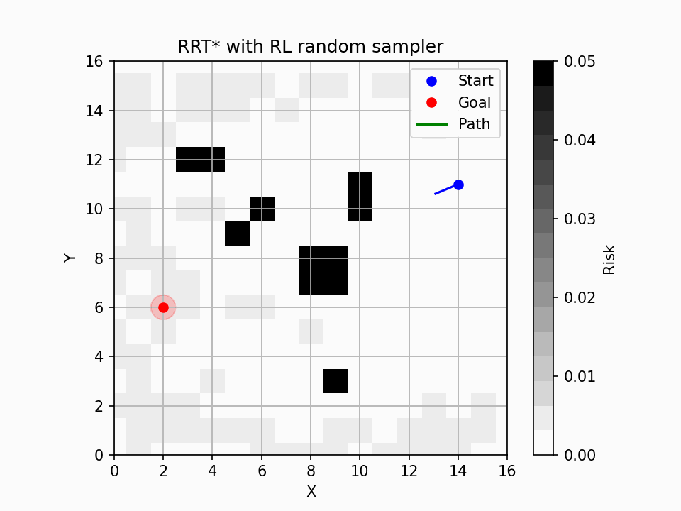
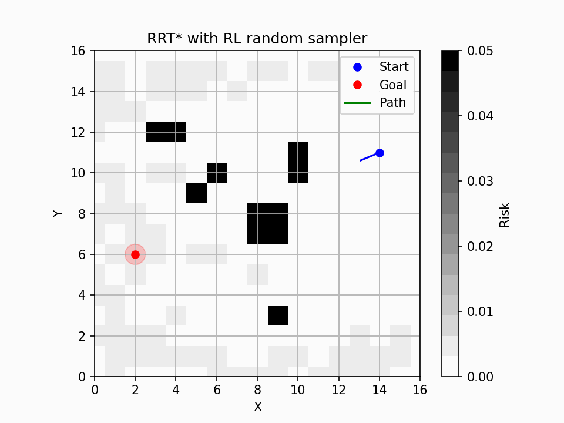

|
Jun Xiang I'm currently a final year joint Phd student at UCSD and SDSU in San Diego, fortunately advised by Prof. Jun Chen and Prof. Sonia Martínez. My research interest is in accelerating the optimization process using machine learning. I am working on stable neural network controllers, reachability analysis, trajectory prediction, and path planning problems. |

|
Selected Publications |
 

|
Generative Multiview Relighting for
3D Reconstruction under Extreme Illumination Variation
Hadi Alzayer, Philipp Henzler, Jonathan T. Barron, Jia-Bin Huang, Pratul P. Srinivasan, Dor Verbin CVPR, 2025 (Highlight) project page / arXiv Images taken under extreme illumination variation can be made consistent with diffusion, and this enables high-quality 3D reconstruction. |
|
Design and source code from Jon Barron's website. Also, consider using Leonid Keselman's Jekyll fork of this page. |